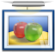
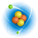

Wikipédia est une encyclopédie libre, accessible sur Internet, à laquelle chacun peut participer. Une multitude de sujets y sont traités ; afin de vous aider à prendre en main l'outil et le moteur de recherche, vous trouverez ci-dessous des liens vers les principales catégories. En savoir plus.
|

|
Arts Architecture • Bande dessinée • Cinéma • Histoire de l'art • Littérature • Musique • Photographie • Spectacle |
|
|
Sciences humaines et sociales Droit • Économie • Géographie • Histoire • Information • Langues • Philosophie • Psychologie • Sociologie |
 |
Société Éducation • Entreprises • Environnement • Femmes • Humanitaire • Minorités • Politique • Religion |
|

|
Sciences exactes et naturelles Astronomie • Biologie • Chimie • Mathématiques • Médecine • Physique • Sciences de la Terre et de l'Univers |
 |
Vie quotidienne et loisirs Collections • Gastronomie • Jardinage • Jeux • Mode • Sexualité • Sport • Télévision • Tourisme |
|
|
Technologies Électricité et électronique • Énergie • Industrie • Informatique • Robotique • Transports |
Par où commencer ?
Wikimédia par moulin regroupe les contenus de differents projets libre (auxquels tout le monde peut participer) dont Wikipédia, l'encyclopedie, mais aussi d'autres (voir ci-dessous).
Entrez un mot-clé dans le moteur de recherche (en haut) ou utilisez les liens proposés sur cette page pour naviguer sur les projets. En cas de problème, consultez la page d'aide.
Autres projets Wikimédia
 Wikiquote
Wikiquote Wikibooks
Wikibooks- Wikisource
Wikiquote est une collection de citations en tous genre.
Wikibooks est un catalogue de livres et documents pédagogiques. Ses documents traitent une grande variété de sujets allant des sciences à la bande dessinée.
Wikisource est une bibliothèque universelle rassemblant de nombreux ouvrages dont les droits font parti du domaine public.